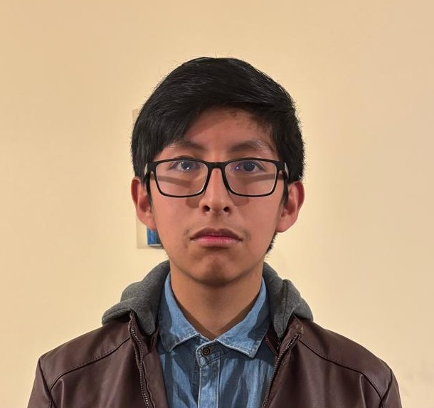
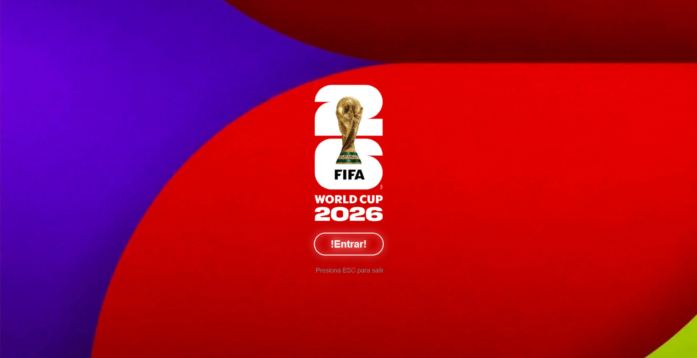

Ingeniería de Sistemas
Universidad Católica Boliviana
-
Ingeniero de Sistemas
La Paz, BoliviaMi nombre es Miguel Ramos, soy un estudiante de la carrera de Ingenieria de Sistemas, aparte de ser un especialista en algunas artes como la muscia y el teatro
Estudiante de 4.° semestre de Ingeniería de Sistemas en la Universidad Catolica boliviana con sólida base en lógica de programación, bases de datos (SQL) y Python. Tengo experiencia en el desarrollo de proyectos académicos de software orientado a objetos. Busco pasantias para poder desempeñar y fortalecer de mejor manera mis conocimientos y aptitudes en un entorno mas profesional.
Especializado en lenguajes de programacion como Python, C++, Java y SQL, alto control bajo presion a la hora de desiciones dificiles. pensamiento logico a la hora de buscar soluciones, oratoria a la hora de exponer.
Interesado en integrarme al desarrollo de software mediante herramientas de programacion como Python, Java o SQL, para proyectos y colaborar en la resolucion de problemas, junto al manejo y creacion de Inteligencia Artificial.
Universidad Católica Boliviana
-Programador en un videojuego de C++
Universidad Catolica Boliviana
-Funcion de Programador para el enemigo del videojuego Welcome to terrifier, desarrollador de su patron de movimiento, puntos de patrulla, funciones de persecucion, mecanica de escape mediante quick time events.
Actor Principal y Performer de Repertorio
Teatro Triskel
-Encarnar roles principales y de reparto en montajes de dramaturgia clásica, contemporánea y teatro físico, participar en procesos de investigación actoral, mesas de lectura, entrenamiento vocal y trabajo corporal para la caracterización de personajes, colaboracion con la dirección de escena y el equipo de coreografía en la adaptación de movimientos, marcas en escenario e improvisación guiada
Voluntario en un asilo de ancianos
Asilo San Ramon
-Brindar acompañamiento afectivo y escucha activa a los residentes para promover su bienestar emocional y combatir el aislamiento social, Capacitar a los adultos mayores en el uso de herramientas digitales básicas para facilitar videollamadas con sus familias.
Lenguajes o tecnologias
Herramientas de desarrollo
Habilidades profesionales
| Idioma | Lectura | Escritura | Conversacion |
|---|---|---|---|
| Español | Avanzado | Avanzado | Nativo |
| Ingles | Avanzado | Nativo | Avanzado |
| Frances | Basico | Basico | Nativo |
| Aleman | Nativo | Basico | Nativo |
Welcome to terrifier es un juego basado en las peliculas de Terrifier ambientada entre las primeras peliculas donde encarnamos a Siena en una busqueda de reliquias que ayuden a purgar a Art el payaso de su cabeza, pero cuidado, que el payaso no estara contento e intentara detenerte a toda costa
Tecnologias utilizadas
Programador del funcionamiento del enemigo art el payaso incluyendo un metodo de persecucion, algoritmo de patrullas mecanica de escape y comportamiento basado en rastros
Creacion de un juego divertido que usa terminos aprendidos en clases relacionados a la programacion en C++
en desarrollo
Es un espacio donde toda informacion relacionada al mundial de futbol puede ser adquirida, desde los equipos, estadios, ganadores previos del mundial, incluyendo mecanicas como un quiz para probar el conocimiento y un reproductor de musica con todas las melodias usadas en los mundiales
Tecnologias utilizadas
Programador del cuestionario mediante el uso de programacion orientada a objetos, persistencia de datos para guardar puntuaciones, funciones aleatorias para la creacion de cuestionarios unicos con diferentes tonos de dificultad.
Creacion de una aplicacion con una gran base de datos de informacion relacionada al Mundial, aplicando el conocimiento aprendido sobre POO y Java
en desarrollo
